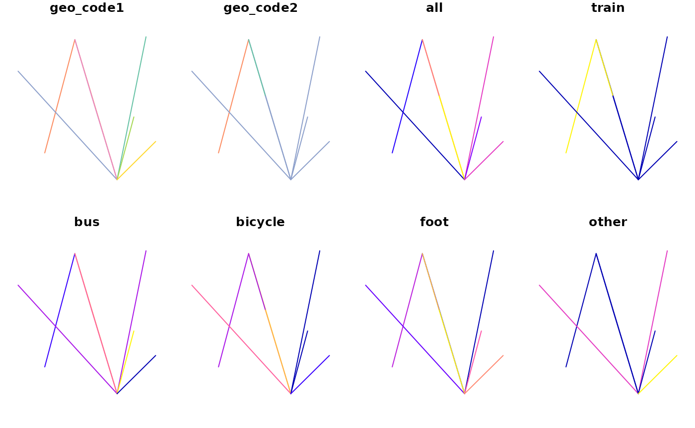

Origin-destination data with stplanr
Robin Lovelace and Edward Leigh
Source:vignettes/stplanr-od.Rmd
stplanr-od.RmdIntroduction: what is OD data?
As the name suggests, origin-destination (OD) data represents movement through geographic space, from an origin (O) to a destination (D). Sometimes also called ‘flow data’, OD datasets contain details of trips between two geographic points or, more commonly, zones (which are often represented by a zone centroid). Most OD datasets refer to start and end locations with ‘ID’ columns containing character strings such as zone1. These IDs refer to a geographic feature in a separate geographic dataset. Origin and destination locations are sometimes represented as geographic coordinates.
OD datasets typically contain multiple non geographic attributes. These usually include, at a minimum, the number of trips that take place from the origin to the destination over a given time period (e.g. a typical work day). Additional attributes can include breakdown by the mode(s) of transport used for the trips. Usually only a single mode is captured (trips made by a combination of cycle-train-walk modes are often counted only as ‘train’ trips). Additional disaggregations of overall counts may include trip counts at different time periods.
Many OD datasets omit information. If there is only one time period, then this resides in the metadata for the whole data set. There is rarely any information about the path taken between the start and end points. It is typically the job of the analyst to use a routing service (such as OSRM, Google Directions API, CycleStreets.net or OpenRouteService) or an assignment model (such as those contained in proprietary software such as SATURN and Visum) to identify likely routes with reference to shortest path algorithms or generalised cost minimisation algorithms (which account for monetary plus time and quality ‘costs’).
The importance of OD data
Despite the rather dull name, OD datasets are a vital part of the modern world: they underpin analysis and models that influence current and future transport systems. Historically, these models, and the OD datasets that drove them, were used to plan for car-dominated cities (Boyce and Williams 2015). Now that there is growing evidence of the negative impacts car domination, however, there is a strong argument for transport models being re-purposed. Origin-destination data can be part of the solution.
From a health perspective transport planning, supported by OD data and analysed primarily using proprietary software and opaque methods, has failed: roads are now the largest cause of death of young people worldwide, killing more than 1 million people each year (World Health Organization 2018). Even ignoring problems such as air pollution, obesity and climate change, it is clear that current transport systems are unsustainable. There are other reasons why transport data analysis and software are important (Lovelace and Ellison 2018).
The purpose of this vignette is to introduce OD data, an important component of many transport planning models, with examples based on data and functions from the stplanr package. The aim is to enable you to use OD data to inform more sustainable transport plans, for example by identifying ‘desire lines’ along which policies could cause a modal switch away from cars and towards lower energy modes such as walking, cycling, and public transport.
An example OD dataset
OD data can be accessed from a range of sources (we will see code that downloads many thousands of OD pairs later in this vignette). Some ‘data carpentry’ may be needed before the OD data is ready for analysis. This vignette does not cover cleaning OD data: we assume you know R and come with ‘tidy’ data (Wickham 2014), in which each row represents travel between an origin and a destination (typically zones represented by zone IDs), and each column represents an attribute such as number of trips or vehichle counts by mode or straight line distance.1
In simple terms OD data looks like this:
library(stplanr)
library(dplyr)
od <- stplanr::od_data_sample %>%
select(-matches("rail|name|moto|car|tax|home|la_")) %>%
top_n(n = 14, wt = all)
class(od)
#> [1] "tbl_df" "tbl" "data.frame"
od
#> # A tibble: 14 x 8
#> geo_code1 geo_code2 all train bus bicycle foot other
#> <chr> <chr> <dbl> <dbl> <dbl> <dbl> <dbl> <dbl>
#> 1 E02002361 E02002361 109 0 4 2 59 0
#> 2 E02002361 E02002393 94 0 17 0 10 1
#> 3 E02002363 E02002363 183 2 13 5 101 0
#> 4 E02002363 E02002384 92 1 13 2 21 0
#> 5 E02002363 E02002393 156 0 19 12 15 0
#> 6 E02002367 E02002393 88 0 17 4 16 1
#> 7 E02002371 E02002363 110 1 18 2 47 0
#> 8 E02002371 E02002371 220 1 28 1 116 2
#> 9 E02002371 E02002393 165 0 18 10 49 0
#> 10 E02002377 E02002377 129 0 11 1 79 0
#> 11 E02002377 E02002393 93 0 20 0 37 0
#> 12 E02002382 E02002393 94 0 9 1 44 3
#> 13 E02002384 E02002384 166 2 13 2 116 0
#> 14 E02002393 E02002393 265 4 15 0 185 6Like all data, the object od, created in the preceding code chunk, comes from a specific context: the 2011 UK Census questions:
- In your main job, what is the address of your workplace?
- How do you usually travel to work (for the longest part, by distance, of your usual journey to work)?
- Work mainly at or from home
- Underground, metro, light rail, tram
- Train
- …
The object od is a data frame containing aggregated answers to these questions (see ?pct::get_od() for details). It is implicitly geographic: the first two columns refer to geographic entities but do not contain coordinates themselves (OD coordinates are covered below). Other columns contain attributes associated with each OD pair, typically counting how many people travel by mode of transport. OD data can be represented in a number of ways, as outlined in the next sections.
Origin-destination pairs (long form)
The most useful way of representing OD data is the ‘long’ data frame format described above. This is increasingly the format used by official statistical agencies, including the UK’s Office for National Statistics (ONS), who provide origin destination data as a .csv file. Typically, the first column is the zone code of origin and the second column is the zone code of the destination, as is the case with the object od. Subsequent columns contain attributes such as all, meaning trips by all modes, as illustrated below (we will see a matrix representation of this subset of the data in the next section):
od[1:3]
#> # A tibble: 14 x 3
#> geo_code1 geo_code2 all
#> <chr> <chr> <dbl>
#> 1 E02002361 E02002361 109
#> 2 E02002361 E02002393 94
#> 3 E02002363 E02002363 183
#> 4 E02002363 E02002384 92
#> 5 E02002363 E02002393 156
#> 6 E02002367 E02002393 88
#> 7 E02002371 E02002363 110
#> 8 E02002371 E02002371 220
#> 9 E02002371 E02002393 165
#> 10 E02002377 E02002377 129
#> 11 E02002377 E02002393 93
#> 12 E02002382 E02002393 94
#> 13 E02002384 E02002384 166
#> 14 E02002393 E02002393 265geo_code1 refers to the origin, geo_code2 refers to the destination.
Additional columns can represent addition attributes, such as number of trips by time, mode of travel, type of person, or trip purpose. The od dataset contains column names representing mode of travel (train, bus, bicycle etc), as can be seen with names(od[-(1:2)]). These ‘mode’ columns contain integers in the example data, but contain characters, dates and other data types, taking advantage of the flexibility of data frames.
Origin destination matrices
The ‘OD matrix’ representation of OD data represents each attribute column in the long form as a separate matrix. Instead of rows representing OD pairs, rows represent all travel from each origin to all destinations (represented as columns). The stplanr function od_to_odmatrix() converts between the ‘long’ to the ‘matrix’ form on a per column basis, as illustrated below:
od_matrix <- od_to_odmatrix(od[1:3])
class(od_matrix)
#> [1] "matrix" "array"
od_matrix
#> E02002361 E02002393 E02002363 E02002384 E02002371 E02002377
#> E02002361 109 94 NA NA NA NA
#> E02002363 NA 156 183 92 NA NA
#> E02002367 NA 88 NA NA NA NA
#> E02002371 NA 165 110 NA 220 NA
#> E02002377 NA 93 NA NA NA 129
#> E02002382 NA 94 NA NA NA NA
#> E02002384 NA NA NA 166 NA NA
#> E02002393 NA 265 NA NA NA NANote that row and column names are now zone codes. The cell in row 1 and column 2 (od_matrix[1, 2]), for example, reports that there are 94 trips from zone E02002361 to zone E02002393. In the case above, no people travel between the majority of the OD pair combinations, as represented by the NAs. OD matrices are a relatively rudimentary data structure that pre-date R’s data.frame class. Typically, they only contained integer counts, providing small and simple datasets that could be used in 20th Century transport modelling software running on limited 20th Century hardware.
Although ‘OD matrix’ is still sometimes used informally to refer to any OD datadset, the long OD pair representation is recommended: OD matrices become unwieldy for large OD datasets, which are likely to be sparse, with many empty cells represented by NAs. Furthermore, to represent many attributes in matix format, multiple lists of OD matrices or ‘OD arrays’ must be created. This is demonstrated in the code chunk below, which represents travel between OD pairs by all modes and by bike:
lapply(c("all", "bicycle"), function(x) od_to_odmatrix(od[c("geo_code1", "geo_code2", x)]))
#> [[1]]
#> E02002361 E02002393 E02002363 E02002384 E02002371 E02002377
#> E02002361 109 94 NA NA NA NA
#> E02002363 NA 156 183 92 NA NA
#> E02002367 NA 88 NA NA NA NA
#> E02002371 NA 165 110 NA 220 NA
#> E02002377 NA 93 NA NA NA 129
#> E02002382 NA 94 NA NA NA NA
#> E02002384 NA NA NA 166 NA NA
#> E02002393 NA 265 NA NA NA NA
#>
#> [[2]]
#> E02002361 E02002393 E02002363 E02002384 E02002371 E02002377
#> E02002361 2 0 NA NA NA NA
#> E02002363 NA 12 5 2 NA NA
#> E02002367 NA 4 NA NA NA NA
#> E02002371 NA 10 2 NA 1 NA
#> E02002377 NA 0 NA NA NA 1
#> E02002382 NA 1 NA NA NA NA
#> E02002384 NA NA NA 2 NA NA
#> E02002393 NA 0 NA NA NA NAThe function odmatrix_to_od() can converts OD matrices back into the more convenient long form:
odmatrix_to_od(od_matrix)
#> orig dest flow
#> 1 E02002361 E02002361 109
#> 9 E02002361 E02002393 94
#> 18 E02002363 E02002363 183
#> 26 E02002363 E02002384 92
#> 10 E02002363 E02002393 156
#> 11 E02002367 E02002393 88
#> 20 E02002371 E02002363 110
#> 36 E02002371 E02002371 220
#> 12 E02002371 E02002393 165
#> 45 E02002377 E02002377 129
#> 13 E02002377 E02002393 93
#> 14 E02002382 E02002393 94
#> 31 E02002384 E02002384 166
#> 16 E02002393 E02002393 265Inter and intra-zonal flows
A common, and sometimes problematic, feature of OD data is ‘intra-zonal flows’. These are trips that start and end in the same zone. The proportion of travel that is intra-zonal depends largely on the size of the zones used. It is often useful to separate intra-zonal and inter-zonal flows at the outset, as demonstrated below:
(od_inter <- od %>% filter(geo_code1 != geo_code2))
#> # A tibble: 8 x 8
#> geo_code1 geo_code2 all train bus bicycle foot other
#> <chr> <chr> <dbl> <dbl> <dbl> <dbl> <dbl> <dbl>
#> 1 E02002361 E02002393 94 0 17 0 10 1
#> 2 E02002363 E02002384 92 1 13 2 21 0
#> 3 E02002363 E02002393 156 0 19 12 15 0
#> 4 E02002367 E02002393 88 0 17 4 16 1
#> 5 E02002371 E02002363 110 1 18 2 47 0
#> 6 E02002371 E02002393 165 0 18 10 49 0
#> 7 E02002377 E02002393 93 0 20 0 37 0
#> 8 E02002382 E02002393 94 0 9 1 44 3
(od_intra <- od %>% filter(geo_code1 == geo_code2))
#> # A tibble: 6 x 8
#> geo_code1 geo_code2 all train bus bicycle foot other
#> <chr> <chr> <dbl> <dbl> <dbl> <dbl> <dbl> <dbl>
#> 1 E02002361 E02002361 109 0 4 2 59 0
#> 2 E02002363 E02002363 183 2 13 5 101 0
#> 3 E02002371 E02002371 220 1 28 1 116 2
#> 4 E02002377 E02002377 129 0 11 1 79 0
#> 5 E02002384 E02002384 166 2 13 2 116 0
#> 6 E02002393 E02002393 265 4 15 0 185 6Intra-zonal OD pairs represent short trips (up to the size of the zone within which the trips take place) so are sometimes ignored in OD data analyis. However, intra-zonal flows can be valuable, for example in measuring the amount of localised transport activity and as a sign of local economies.
Oneway lines
Another subtly with some (symetric, where origins and destinations can be the same points) OD data is that oneway flows can hide the extent of bidirectional flows in plots and other types of analysis. This is illustrated below for a sample of the od dataset:
(od_min <- od_data_sample[c(1, 2, 9), 1:6])
#> # A tibble: 3 x 6
#> geo_code1 geo_code2 all from_home light_rail train
#> <chr> <chr> <dbl> <dbl> <dbl> <dbl>
#> 1 E02002361 E02002361 109 0 0 0
#> 2 E02002361 E02002363 38 0 0 1
#> 3 E02002363 E02002361 30 0 0 0
(od_oneway <- od_oneway(od_min))
#> # A tibble: 2 x 6
#> geo_code1 geo_code2 all from_home light_rail train
#> <chr> <chr> <dbl> <dbl> <dbl> <dbl>
#> 1 E02002361 E02002361 109 0 0 0
#> 2 E02002361 E02002363 68 0 0 1Note that in the second dataset there are only 2 rows instead of 3. The function od_oneway() aggregates oneway lines to produce bidirectional flows. By default, it returns the sum of each numeric column for each bidirectional origin-destination pair.
Desire lines
The previous representations of OD data are all implicitly geographic: their coordinates are not contained in the data, but associated with another object that is geographic, typically a zone or a zone centroid. This is problematic, meaning that multiple objects or files are required to fully represent the same data. Desire line representations overcome this issue. They are geographic lines between origin and destination, with the same attributes as in the ‘long’ representation.
od2line() can convert long form OD data to desire lines. The second argument is a zone or a centroid dataset that contains ‘zone IDs’ that match the IDs in the first and second columns of the OD data, as illustrated below:
z <- zones_sf
class(z)
#> [1] "sf" "data.frame"
l <- od2line(flow = od_inter, zones = z)
#> Creating centroids representing desire line start and end points.The preceding code chunk created a zones object called z, the coordinates of which were used to convert the object od into l, which are geographic desire lines. The desire line object is stored in as a geographic simple features object, which has the same number of rows as does the object od and one more column:
The new column is the geometry column, which can be plotted as follows:
plot(l$geometry)By default, plotting l shows the attributes for each line:
plot(l)
Because these lines have a coordinate reference system (CRS) inherited from the zones data, they can also be plotted on an interactive map, as follows (result only shown if webshot is installed):
library(leaflet)
leaflet() %>%
addTiles() %>%
addPolygons(data = l)Non-matching IDs
Note that in some OD datasets there may be IDs that match no zone. We can simulate this situation by setting the third origin ID of od to nomatch, a string that is not in the zones ID:
od$geo_code2[3] <- "nomatch"
od2line(od, z)
#> Creating centroids representing desire line start and end points.
#> Error: 1 non matching IDs in the destination. ID on row 3 does not match any zone.
#> The first offending id was nomatchYou should clean your OD data and ensure all ids in the first two columns match the ids in the first column of the zone data before running od2line().
A larger example: commuter trips in London
The minimal example dataset we’ve been using so far is fine for demonstrating the key concepts of OD data. But for more advanced topic, and to get an idea of what is possible with OD data at a city level, it helps to have a larger dataset.
We will use an example dataset representing commuting in London, accessed as follows (note: these code chunks are not evaluated in the vignette because it starts by downloading 2.4 million rows and could take a few minutes to run). First, we can use the pct package to download official data from the UK (note the addition of the % active column):
library(dplyr)
# get nationwide OD data
od_all <- pct::get_od()
nrow(od_all)
# > 2402201
od_all$Active <- (od_all$bicycle + od_all$foot) /
od_all$all * 100
centroids_all <- pct::get_centroids_ew() %>% sf::st_transform(4326)
nrow(centroids_all)
# > 7201
london <- pct::pct_regions %>% filter(region_name == "london")
centroids_london <- centroids_all[london, ]
od_london <- od_all %>%
filter(geo_code1 %in% centroids_london$msoa11cd) %>%
filter(geo_code2 %in% centroids_london$msoa11cd)
od_london <- od_all[
od_all$geo_code1 %in% centroids_london$msoa11cd &
od_all$geo_code2 %in% centroids_london$msoa11cd,
]Now that we have the input OD data (in od_london) and zones (population-weighted centroids in cents_london in this case), can can convert them to desire lines:
Even after filering flows to keep only those with origins and destinations in London, there are still more than 300k flows. That is a lot to plot. So we’ll further subset them, first so they only contain inter-zonal flows (which are actually lines, intra-zonal flows are lines with length 0, which are essentially points) and second to contain only flows containing above a threshold level of flows:
min_trips_threshold <- 20
desire_lines_inter <- desire_lines_london %>% filter(geo_code1 != geo_code2)
desire_lines_intra <- desire_lines_london %>% filter(geo_code1 == geo_code2)
desire_lines_top <- desire_lines_inter %>% filter(all >= min_trips_threshold)
nrow(desire_lines_top)
# > 28879If we do any analysis on this dataset, it’s important to know how representative it is of all flows. A crude way to do this is to calculate the proportion of lines and trips that are covered in the dataset:
nrow(desire_lines_top) / nrow(desire_lines_london)
# > 0.08189046
sum(desire_lines_top$all) / sum(desire_lines_london$all)
# > 0.557343This shows that only 8% of the lines contain more than half (55%) of the total number of trips.
Plotting origin-destination data
Once you have an OD dataset of a size that can be plotted (20,000 desire lines is quick to plot on most computers) a logical next stage is to plot it, e.g. with sf’s plot() method:
plot(desire_lines_top["all"]) You may be disapointed by the result, which is more of a ‘hay stack’ plot than an intuitive illustration of flows across the city. To overcome this issue, you can set the aesthetics to emphasize with important flows, e.g. by line width in
You may be disapointed by the result, which is more of a ‘hay stack’ plot than an intuitive illustration of flows across the city. To overcome this issue, you can set the aesthetics to emphasize with important flows, e.g. by line width in sf’s plotting system:
lwd <- desire_lines_top$all / mean(desire_lines_top$all) / 10
desire_lines_top$percent_dont_drive <- 100 - desire_lines_top$car_driver / desire_lines_top$all * 100
plot(desire_lines_top["percent_dont_drive"], lwd = lwd, breaks = c(0, 50, 70, 80, 90, 95, 100))
This is better, but is still not ideal: the code was not intuitive to write, and the result is still not publication quality. Instead, it makes sense to make a dedicated mapping package such tmap, as outlined in the visualisation chapter of the open source book Geocomputation with R (Lovelace, Nowosad, and Meunchow 2019). As shown in the transport chapter of that book, OD flows can be visualised with the following code:
library(tmap)
desire_lines_top <- desire_lines_top %>%
arrange(Active)
tm_shape(london) + tm_borders() +
tm_shape(desire_lines_top) +
tm_lines(
palette = "plasma", breaks = c(0, 5, 10, 20, 40, 100),
lwd = "all",
scale = 9,
title.lwd = "Number of trips",
alpha = 0.5,
col = "Active",
title = "Active travel (%)",
legend.lwd.show = FALSE
) +
tm_scale_bar() +
tm_layout(
legend.bg.alpha = 0.5,
legend.bg.color = "white"
)
The above plot contains much information, providing a visual overview of the transport pattern in the city, telling us that:
- It is a monocentric city, with most flows going to the centre.
- Active transport is geographically dependent, dominating in the central north of the city and with limited uptake on the outskirts of the city.
- Although the city centre dominates, there are many small clusters of flows in the outer region, for example near Heathrow airport, which is located in the far west of the map.
Plotting OD data in this way can tell us much about cities, each of which has a different travel pattern. You can use the same code to visualise mobility patterns in any city. See Section 12.4 of Geocomputation with R to see results for Bristol, a more polycentric city with a lower average percentage of travel by walking and cycling.
Summaries by origin and destination
It is possible to group OD data by origin and destination to gain information at the zone level. The code and resulting plot below, for example, summarises the number of people departing from each zone by mode:
zones_london <- pct::get_pct_zones("london") %>%
select("geo_code")
origin_attributes <- desire_lines_top %>%
sf::st_drop_geometry() %>%
group_by(geo_code1) %>%
summarize_if(is.numeric, sum) %>%
dplyr::rename(geo_code = geo_code1)
# origin_attributes <-
zones_origins <- left_join(zones_london, origin_attributes, by = "geo_code")
plot(zones_origins, border = NA)
We can observe a number of features, including that:
- Rail is much more common in the south, reflecting the greater density of the local rail network, with short distances between stops, in the South of the city.
- Cars dominat in the outer fringes, especiall in the West.
- Taxi and motorbike use have intriguing clusters in the West (perhaps around the wealthy Kensington area for taxis).
The pattern is quite different when we calculate the destinations:
destination_attributes <- desire_lines_top %>%
sf::st_drop_geometry() %>%
group_by(geo_code2) %>%
summarize_if(is.numeric, sum) %>%
dplyr::rename(geo_code = geo_code2) %>%
mutate_at(vars(-matches("geo_|all")), funs(. / all)) %>%
left_join(zones_london, ., by = "geo_code")
plot(destination_attributes, border = NA)
Further reading
Despite the importance of origin-destination datasets for transport research, there are surprisingly few guides dedicated to working with them using open source software. The following suggestions are based on my own reading — if you have any other suggestions of good resources for working with OD data, let me know!
- Section 12.4 of Geocomputation with R (Lovelace, Nowosad, and Meunchow 2019) puts OD data in the wider context of geographic transport data.
- Martin et al. (2018) describe methods for classifying OD pairs based on demographic data.
- The kepler.gl website provides a nifty web application for visualising OD data.
- Documentation for the open source microscopic transport modelling software SUMO describes ways of reading-in OD file formats not covered in this vignette.
- An excellent introduction to modelling and visualising OD data in the introductory vignette of the
flowsR package.
Summary
In summary, stplanr provides many functions for working with OD data. OD data is an important component in transport planning and modelling that can, if used with creativity and skill, could assist with sustainable transport planning and the global transition away from fossil fuels. There are many other things can be done with OD data, some of which could be supported by future versions of this package. To suggest new features of otherwise get in touch, see the stplanr issue tracker at github.com/ropensci/stplanr.
References
Boyce, David E., and Huw C. W. L. Williams. 2015. Forecasting Urban Travel: Past, Present and Future. Edward Elgar Publishing.
Lovelace, Robin, and Richard Ellison. 2018. “Stplanr: A Package for Transport Planning.” The R Journal 10 (2): 7–23. https://doi.org/10.32614/RJ-2018-053.
Lovelace, Robin, Jakub Nowosad, and Jannes Meunchow. 2019. Geocomputation with R. CRC Press. https://geocompr.robinlovelace.net/.
Martin, David, Christopher Gale, Samantha Cockings, and Andrew Harfoot. 2018. “Origin-Destination Geodemographics for Analysis of Travel to Work Flows.” Computers, Environment and Urban Systems 67 (January): 68–79. https://doi.org/10.1016/j.compenvurbsys.2017.09.002.
Wickham, Hadley. 2014. “Tidy Data.” Journal of Statistical Software 59 (10). https://doi.org/10.18637/jss.v059.i10.
World Health Organization. 2018. Global Status Report on Road Safety 2018. S.l. https://www.who.int/publications/i/item/9789241565684.
It may be difficult to convert between ‘number of trip’ and ‘number of vehicle’ counts for modes in which a single vehicle can contain many people, such as cars (a problem that can be overcome when surveys differentiate between car driver and ‘car passenger’ as distinct modes), buses and trams if occupancy levels are unknown. Typically OD data only report single stage trips, but multi-modal trips such as walk-rail-cycle can be represented when such a combination of modes is represented by a new, unique, mode.↩